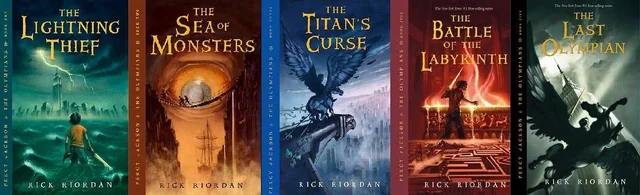

Dive into the World of Rick Riordan's Greek Mythology Series

Meet Percy Jackson:
The Hero of a Generation
At the heart of the series is Percy Jackson, a twelve-year-old boy who discovers he is the son of Poseidon. As he navigates the trials of being a demigod, Percy embarks on epic quests to prevent catastrophic disasters in the mortal and divine realms. With his friends Annabeth Chase, daughter of Athena, and Grover Underwood, a satyr, Percy faces gods, monsters, and treachery, all while dealing with typical teenage woes.
The Series Breakdown
- 
-
Percy Jackson & The Olympians
- The Lightning Thief: Join Percy as he embarks on a quest to retrieve Zeus's stolen lightning bolt, discovering his heritage along the way.
- The Sea of Monsters: Percy must navigate the treacherous waters of the Bermuda Triangle to save Camp Half-Blood.
- The Titan’s Curse: A battle against the Titans leads Percy and his friends on a rescue mission to save a captured demigod.
- The Battle of the Labyrinth: The heroes delve into an underground labyrinth to prevent an impending invasion.
- The Last Olympian: The epic finale where Percy faces Kronos in an all-out battle for the fate of Mount Olympus.
-

-
The Heroes Of Olympus
- The Lost Hero: When a new hero named Jason wakes up without memories, he embarks on a quest to rescue the goddess Hera and uncover his true identity alongside demigods Piper and Leo.
- The Son of Neptune: Percy Jackson regains his memories at Camp Jupiter, where he joins Hazel and Frank on a daring mission to free the Roman god of death, Thanatos.
- The Mark of Athena: As tensions rise between Greek and Roman demigods, Annabeth leads her friends on a perilous journey to find the fabled Mark of Athena and save her mother, Athena.
- The House of Hades: Forced to confront their deepest fears, the demigods must navigate the treacherous Underworld to reunite with their friends and prevent the awakening of the earth goddess, Gaea.
- The Blood of Olympus: In a climactic battle against Gaea and her monstrous giants, the heroes must combine their strengths to protect the world and fulfill their destinies.
-

-
The Trials Of Apollo
- The Hidden Oracle: After being cast down to Earth as a mortal teenager, the former god Apollo teams up with a demigod named Meg McCaffrey to rescue the Oracle of Delphi from an ancient threat.
- The Dark Prophecy: Apollo and his friends embark on a dangerous quest to save the Waystation and prevent a sinister prophecy from coming to fruition.
- The Burning Maze: As they navigate a deadly labyrinth, Apollo and his companions race against time to rescue one of their own and confront the challenges posed by the ruthless god of death.
- The Tyrant's Tomb: Apollo must gather his allies and face the monstrous tyrant Commodus in a battle for survival as they attempt to reclaim the Oracle of Trophonius.
- The Final Trial: In an epic conclusion, Apollo and his friends unite to confront Gaea's forces and restore balance to the world, fulfilling the trials that will determine Apollo’s fate.
Themes That Resonate
Riordan’s books tackle universal themes such as friendship, loyalty, and self-discovery. Each character’s journey is relatable, mirroring the struggles of growing up while exploring rich mythological narratives. The humor woven throughout the series adds a light-hearted touch, making these stories both entertaining and educational.
Why Read?
-
Engaging Storytelling: Riordan’s writing style captivates young readers, blending humor with suspenseful action.
-
Educational Value: The series introduces readers to Greek mythology in a fun and accessible way, sparking interest in ancient history and literature.
-
Diverse Characters: The stories feature a diverse cast, showcasing various cultures and backgrounds, allowing all readers to see themselves in the narrative.
Join The Adventure!
For fans eager to dive deeper into the world of Percy Jackson and his friends, visit our resources section for quizzes, character profiles, and discussion guides. Join the community of readers who share your passion for mythology and adventure!